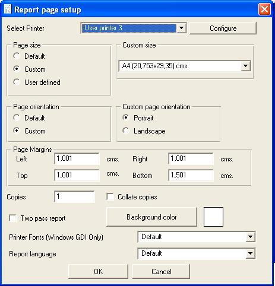

To alter report page setup go to page setup option in file menu.
If you left page size Default, the engine will not select any page size before printing, that is will use the default system page size.
If you left page orientation Default, the enine will not select any page orientation before printing, that is will use the default system page orientation.
You can configure the report to a specific page size, and also force printer orientation, the default is use current configured printer page and orientation.

Language property allow you to design the report to print it in multiple languages, the language property only affect labels, you design the report in english, then switch to another language, and modify labels, before printing you can switch language from Report Manager Designer and Report Manager components in Delphi/Kylix/Builder (language property).
Printer Fonts property allow Microsft Windows platform the option to use printer fonts in dot matrix printers so the report will be printed in Native Printer fonts, with the best precision and speed. To do so you must install the correct driver for the selected printer, or the printer driver that the physical printer is emulating via Hardware.
Page margins are used as the origin for printing sections, bottom margin limits the space used in the bottom of the page, and right margin limits the space used to the right of the page that is when printing horizontally (labels for example).